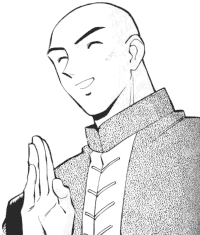

Crossover FanFics: A-C |
This page holds crossover fan fiction that includes Tenchi Muyo. Crossovers are very intresting. They really change the character interactions since the mixing of diffrent worlds, series, situations, can change the dynamic of the story. Please go here if you would like your works published. |
A
Abrelle (Abrelle@Yahoo.com)
Achariyth (Achariyth@aol.com)
Cherie Allen (future_is_generation_x@yahoo.com)
Ammadeau (roy.fokker@unspacy.org)
No Need for Ranma!
A Ranma/Tenchi alternate history story. (Multipart) -2/6/2000
No Need for Evangelions!
A Neon Genesis Evangelion / Tenchi Muyo meld. (Multipart)
-7/23/1999
The Neon Knight Sabers
A EVA / Oh My Goddess! / Sailor Moon / Tenchi Muyo TV / Ranma ½
/ Gunsmith Cats / El-Hazard / Bubblegum Crisis / kitchen sink crossover.
(Multipart) -3/20/2000
Christopher Angel (CJA124@mail.usask.ca)
AnimeBabe (animebabe@chibizone.zzn.com)
Animus Cain (Animus_Cain@HotMail.com)
Anthos the Battlemage (me_grimlock41@hotmail.com)
Andrew Askew (Awa51669@jetson.uh.edu)
Anthos the Battlemage (me_grimlock41@hotmail.com)
Emevas Ardea (hatman@inetaccess.com)
Arial-Washu! (Washu_Wannabe@hotmail.com)
Please. No need for a Story!
- Prolog : "Really... No need for a Prolog!"
Tenchi/Ranma crossover. 8KB. -2/25/1999
Jordan "Nintenchi" Arnold (Nintenchi89@aol.com) & Nathan "Medanat" Roman (BitorNR@aol.com)
Ken Arromdee (arromdee@rahul.net)
Astrobot 7000 (Astro700@aol.com)
AvalonKnight (avalon517@hotmail.com)
Daniel "Yamoto" Ayers (animeayers@hotmail.com)
Azaka the Knight (eaaguilar@msn.com)
Armen "Shogun" Bakalian (patriot014@hotmail.com)
Rob "Ashita" Barba (rob@yogipigs.org)
Nathan "Kenshin Hiryu" Barlow (nemisis5k@yahoo.com)
End of Times - Episode 1 :
"Premonitions"
A saiyin father dreams of his family and homeworld being destroyed
at the hands of a dark and destructive force. A soon to be DBZ/TM/and various
other anime/videogame crossover. 15KB -3/27/2002
Keener Barnes (rpattill@ix.netcom.com)
Aaron Bastin (triatic@hotmail.com)
B-chaos (bafarmer2@cs.com)
Beagle-san (beagle_san@hotmail.com)
Glyph Bellchime (glyph_bellchime@hotmail.com) and REBB01
Chris "Nataki Shadowfist" Beltz (Nataku123@hotmail.com)
Paul "IrrCapT" Bernard (irrcapt@hotmail.com)
Alex "Trunks" Betts (alex8525@yahoo.com)
BGlanders (BGlanders@aol.com)
John Biles (rhea@tass.org)
Tausif "Shingami" Billah (gokuu788@aol.com)
Blark Feeglewater (ChipPud@aol.com)
Leo "Bishamon Fett" Bohl (bishamonfett@hotmail.com)
BoneparteOzaki (Makoto_chan13@hotmail.com)
Big Bore (BigBore@eagle.ptialaska.net)
Iain Boulton (iain_boulton@hotmail.com)
Shamus "Tenchi" Bowker (SBowker@home.com) and Allan "Ryoga" Scott (Ryoga@uvic.ca)
Mike Breen (Mikeb@user1.channel1.com)
Glenn Britschge (tenchi3035@yahoo.com)
Brood4ever84 (Brood4ever84@aol.com)
Michelle Burgin (mburgin@indiana.edu)
Brian Burke (the_krane@hotmail.com)
Bianca ''Demoness of Darkness'' Brown (bibi_29229@yahoo.com)
Adam Bruce (Bomberini@aol.com)
Kevin Byrnes (WFFan1@aol.com)
Alien Encounter
Kiyone encounters the perfect killing machine. 52KB -7/30/2001
Cabbit Lover (tcshan@aol.com)
Robert J. Cannard (fanfics@bobtmigo.com)
Michael Castillo (SSGoten5899@aol.com)
Trent Chau (PPPChan@aol.com)
Donny Cheng (Chengdo@shaw.wave.ca)
Chewy (Billriddle1@home.com)
Chibi2000 (Chibi101@hotmail.com)
Chibi Halo (chibihalo2@yahoo.com)
Chibi-Ryoko Habuki (gdtriplett@mindspring.com)
Daniel "DCForever" Clark (dcforever001@hotmail.com)
Autmn Clonts (JLClonts@webtv.net)
Ewen "Ryoga" Cluney (Ryoga_Hibiki@hotmail.com)
Emily Colley (petaholic2001@hotmail.com)
Sas "Ryoko" Colley (ryoko_and_tenchi_4eva@hotmail.com)
CommaderMakaii (pokedave@bellsouth.net)
The CopyCat (TheCopyCat1@homestead.com)
Coyote (coyote@daimi.au.dk)
Darien Cross (Darien1999@aol.com)
Darwin "Pug" Cruz (cruzd@rpi.edu)
The Girl Who Wasn't and the Princess
Who Was
Ranma/Tenchi Muyo Alternate Reality, cross-over. (Multipart)
-9/9/1999
Father of the Prince
Continuation of "The girl who wasn't and the princess who was" (Multipart)
-4/3/2000
Liam Culvert (ultimagamer2001@aol.com)